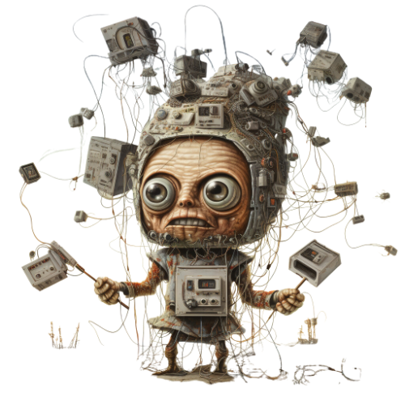
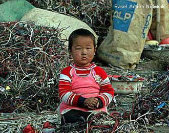
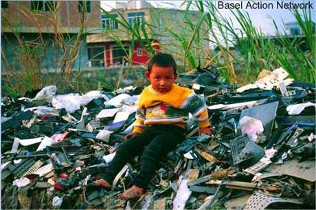
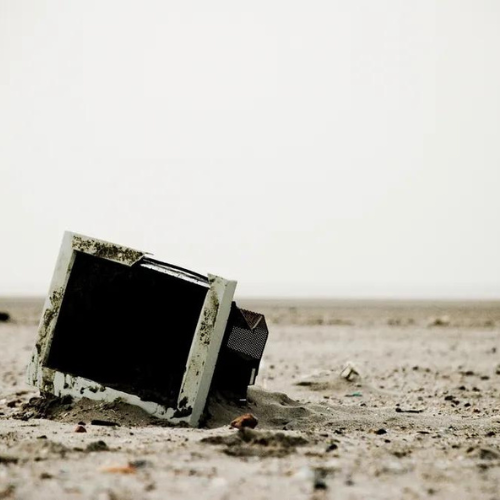
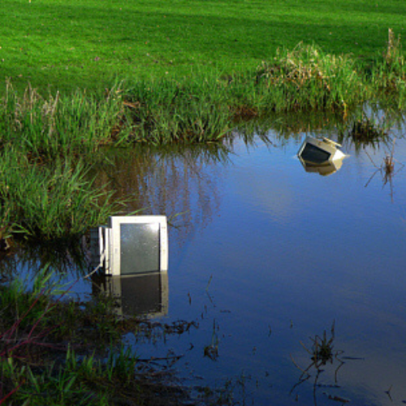
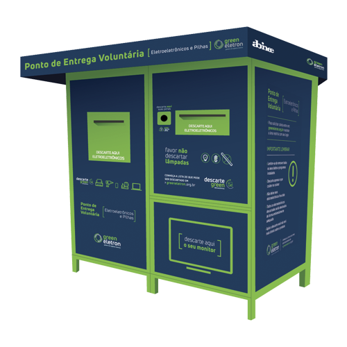
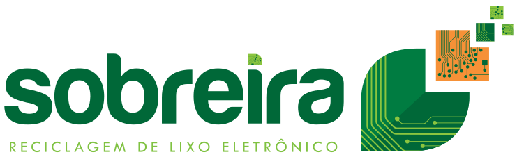

Lixo Eletrônico
Ao falar do lixo eletrônico, a primeira coisa que vem a cabeça são os Spans enviados a nossa caixa de e-mail. Trazendo-nos vírus que podem destruir nossos computadores. Mas o lixo em questão não são esses, são os resíduos eletrônicos, também denominados de e-lixo (e-waste em inglês). Esses são tudo o que é proveniente de equipamentos eletro-eletrônicos, incluindo celulares, computadores, impressoras, notebook, câmeras digitais, MP3 player, entre outros..
Com a rapidez da tecnologia, milhares de aparelhos são descartados diariamente, e cada vez mais o consumidor quer substituir seus aparelhos por outros mais modernos, mesmo que eles ainda estejam em bom funcionamento. Estes equipamentos devem ser encaminhados para lugares específicos, pois são prejudiciais ao meio ambiente devido a sua produção com substâncias nocivas, que uma vez descartados de forma incorreta em locais pouco apropriados como lixões e perto de lençóis freáticos tornam-se problemas ainda maiores.
De acordo com o instituto GEA (Ética e Meio Ambiente)
Um único laptop, por exemplo, exige 50 mil litros d'água em seu processo de fabricação. Além disso, se considerarmos que a vida útil desses equipamentos é muito curta - a de um computador gira em torno de três anos, e a de um celular, cerca de dois anos - podemos ter dimensão da quantidade de lixo que o descarte de eletrônicos significa. Os REEE, se descartam de forma inadequada, constituem-se em um sério risco para o meio ambiente, pois possuem em sua composição metais pesados altamente tóxicos, como mercúrio, cádmio, berílio e chumbo, além de outros compostos químicos como os BFRs (Brominated Flame Retardants). Em contato com o solo, os metais pesados contaminam o lençol freático; se queimados, os BFRs liberam toxinas perigosas. Portanto, a manipulação e processamento dos REEE, de forma incorreta e desprotegida, contamina os seres humanos que executam estas tarefas e o meio ambiente à sua volta.
Segundo um relatório da ONU, foram cerca de 1,5 milhão de toneladas por ano, sendo que apenas 3% desse total foi reciclado ou descartado de forma correta. O lixo eletrônico, ou e-waste, é composto por todos os aparelhos que dependem de energia elétrica ou bateria para funcionar e que, quando não são mais úteis, são jogados fora. Isso inclui desde celulares, computadores e tablets até geladeiras, televisores e micro-ondas.
Atualmente as questões referentes ao lixo eletrônico são preocupações mundial e, no Brasil não poderia ser diferente, desde 5 de agosto de 2010 esta aprovada uma Lei Federal nº 12.305, referente à Política Nacional de Resíduos Sólidos no Brasil, que obriga a dar-se destinação adequada para os resíduos eletroeletrônicos. A lei, que tramitou por mais de 20 anos no Congresso Nacional, responsabiliza as empresas pelo recolhimento de produtos descartáveis. Mas, não só as empresas, a nova lei prevê deveres para todos desde o fabricante, passando pelo vendedor e, finalmente, chegando ao consumidor. Mas apesar de ter sido aprovada em agosto do ano passado, a lei dos resíduos sólidos ainda não está em vigor.
Sabe-se que faltam muitos desafios a serem vencidos como acordos setoriais, metas para cada categoria de lixo e toda a questão da logística reversa. O problema é que a maior parte desses resíduos não tem ainda destinação adequada. Um risco para o meio ambiente e a saúde.
Os efeitos do lixo eletrônico na saúde
Além de seu efeito nocivo sobre o meio ambiente e o contrabando ilegal para os países em desenvolvimento, os pesquisadores associaram o lixo eletrônico a efeitos adversos sobre a saúde humana.
Os danos incluem a inflamação e o estresse oxidativo, precursores de doenças cardiovasculares, danos ao DNA e, possivelmente, câncer.
Em um estudo publicado no jornal científico Environmental Research Letters, os pesquisadores recolheram amostras de ar em uma das maiores áreas de desmantelamento de lixo eletrônico na China e examinaram seus efeitos sobre as células epiteliais do pulmão humano.

O lixo eletrônico inclui aparelhos elétricos e eletrônicos que chegaram ao fim de sua vida útil, como computadores, televisores, impressoras e telefones celulares.
Grande parte desse lixo eletrônico de todo o mundo é exportada para a China. Devido à forma como é feito o processo de reciclagem, a céu aberto, são liberados muitos poluentes, que podem facilmente se acumular no corpo humano através da inalação do ar contaminado.
Inflamação e estresse oxidativo
Depois de expor as células pulmonares cultivadas em laboratório aos constituintes orgânico-solúveis e solúveis em água das amostras de ar, os pesquisadores testaram os níveis de interleucina-8, um importante mediador da resposta inflamatória e moléculas quimicamente reativas que, quando em excesso, podem causar grandes danos à saúde. Os resultados mostraram que as amostras de poluentes causaram aumentos significativos.
“Tanto a resposta inflamatória quanto o estresse oxidativo podem ocasionar danos ao DNA, o que poderia induzir a oncogênese, ou até mesmo câncer. Naturalmente, a resposta inflamatória e o estresse oxidativo também estão associados com outras doenças, como as cardiovasculares,” explicou o Dr. Fangxing Yang, da Universidade de Zhejiang.
Desmantelamento primitivo

“A partir destes resultados fica claro que o desmantelamento ‘aberto’ do lixo eletrônico deve ser proibido, melhorando estas técnicas mais primitivas. Como os resultados mostram potenciais efeitos adversos à saúde humana, os trabalhadores nesses locais também devem receber a proteção adequada,” afirmou o cientista.
“Além disso, deve-se considerar o processo de fabricação inicial dos produtos elétricos e eletrônicos, buscando utilizar materiais mais amigáveis ao meio ambiente e aos humanos,” concluir Yang.
fonte: www.diariodasaude.com.br
O que é lixo eletrônico?

O lixo eletrônico tem um nome técnico: Resíduo de Equipamentos Elétricos e Eletrônicos (REEE). Essa categoria abrange diversos equipamentos, desde o celular até as máquinas de lavar, e está dividida em subcategorias. Saiba quais são elas nos tópicos a seguir:
linha verde: notebooks, celulares, tablets, mouses, teclados, computadores de mesa, impressoras, carregadores, fones de ouvido, pilhas, baterias, cabos;
linha marrom: televisores, aparelhos de som e equipamentos de DVD ou VHS;
linha azul: eletrodomésticos portáteis, como liquidificadores, batedeiras, ferros elétricos e secadores de cabelo;
linha branca: eletrodomésticos grandes, como geladeiras e fogões.
Na hora de pesquisar onde descartar o lixo eletrônico, é fundamental conhecer essas categorias. Afinal de contas, alguns pontos de coleta recebem apenas equipamentos específicos. Além disso, fica mais fácil reunir os itens de acordo com essa classificação.
Por que é importante fazer o descarte correto?

Diversos materiais e elementos químicos são usados na fabricação dos equipamentos eletrônicos. Borrachas, plásticos, cobre, alumínio, chumbo, ferro, lítio, níquel, cádmio, fibras de vidro e ouro são apenas alguns exemplos.
Além do processo de decomposição demorado, muitos desses materiais contêm elementos tóxicos. Metais pesados, como chumbo e cádmio, podem contaminar o lençol freático e, consequentemente, os rios.
Vale ressaltar que a exposição humana a esses metais pode resultar em doenças hepáticas, cardiovasculares e outras relacionadas ao sistema nervoso. Ou seja, o descarte incorreto de lixo eletrônico é prejudicial à saúde e ao meio ambiente.
Além disso, ele impossibilita a reciclagem desses itens. Por isso, é importante encaminhar os aparelhos para locais especializados. Esses pontos possibilitam a reutilização de tais materiais em novos produtos. Você também pode fazer o descarte de lixo eletrônico em aterros especiais, evitando a contaminação do solo.
Como fazer o descarte correto?
As leis que regem o descarte de lixo eletrônico (em específico a Política Nacional de Resíduos Sólidos, criada em 2010) dizem ser responsabilidade das empresas coletar e reciclar tais materiais.
Contudo, essa regulamentação só foi decretada no ano de 2019. Depois disso, as organizações se comprometeram a realizar o descarte correto de 17% dos eletrônicos no prazo de cinco anos.
Apesar de ser possível encontrar pontos de coleta em shoppings e supermercados, existem muitas dúvidas sobre como fazer o descarte de lixo eletrônico. Confira três dicas abaixo.
Apague seus dados
Um passo importante do descarte de eletrônicos, mas que poucas pessoas sabem, é apagar todos os dados contidos nos aparelhos em questão. Isso garante sua privacidade, uma vez que qualquer pessoa pode ter acesso ao produto descartado.
Então, desvincule suas contas, restaure o sistema, retire o chip e formate o HD antes de entregar os equipamentos. Descarte-os apenas com empresas que tenham licenciamento ambiental.
Procure o fabricante
A Política Nacional de Resíduos Sólidos diz que as empresas devem se responsabilizar pelo descarte de lixo eletrônico. Portanto, você pode entrar em contato com os fabricantes dos aparelhos para descobrir como devolver esses resíduos.
Essa é uma maneira prática e fácil de saber como reciclar lixo eletrônico. Afinal de contas, você não perde tempo pesquisando pontos de coleta próximos à sua residência. Portanto, não hesite em solicitar esse tipo de serviço.
Busque pontos de coleta
Se você não quer falar com o fabricante do seu produto, saiba que não é difícil descobrir sozinho onde fazer o descarte de eletrônicos. Muitas cidades brasileiras possuem iniciativas que coletam e reciclam esse lixo. Então, basta pesquisar os Pontos de Entrega Voluntária (PEVs) mais próximos.
Discarte corretamente

"Hábitos corretos em relação ao lixo diminuem o acúmulo desses resíduos, garantindo um ambiente saudável para nós e as futuras gerações. Lembre-se sempre: todo lixo que produzimos, se descartado de maneira incorreta, afeta negativamente o planeta e alguns produtos podem causar danos por vários e vários anos.
"Outro ponto importante é nunca lançar o lixo em locais impróprios, como vias públicas e lotes baldios. Além de ajudar no entupimento de boeiros, o lixo pode conter substâncias nocivas ao homem e outros animais, além de atrair os vetores de doenças."
Onde Descartar?
No momento de contratar empresa de descarte de lixo eletrônico é preciso verificar a experiência e credibilidade da empresa para esta atividade, visando evitar que lixo eletrônico contamine o meio ambiente com agentes tóxicos e comprometa a saúde da população. A Translix é uma empresa de descarte de lixo eletrônico altamente especializada nos processos de gerenciamento de resíduos para empresas e indústrias de diversos portes e segmentos que trabalha dentro das normas de segurança para evitar contaminação do ambiente e realizar o descarte de lixo eletrônico de forma sustentável. No momento em que precisar contratar empresa de descarte de lixo eletrônico
Prefeitura de Muriaé

"Dispõe sobre a implantação de coleta seletiva de Resíduos Sólidos para recebimento de material reciclável de empresas comerciais e industriais de grande e médio porte, repartições públicas municipais, hipermercados, supermercados e dá outras providências."

O Que Fazemos
DESCARTE DE LIXO ELETRÔNICO
Descarte correto dos resíduos sólidos eletroeletrônicos (lixo eletrônico), evitando o seu envio para aterros sanitários. Com nossa comprovada qualidade operacional, aliada a experiência e segurança adquiridas no manuseio, tratamento e destinação final de resíduos. Conscientização dos cuidados com o meio ambiente e o descarte correto dos equipamentos.
Realizamos uma triagem minuciosa dos componentes que ainda funcionam
Classificamos os materiais recebidos
Criamos oportunidades para a reutilização de peças
Possibilitamos a inclusão digital, social da comunidade
Contribuímos na diminuição dos impactos ambientais
DESTRUIÇÃO SEGURA DE DADOS
Destruição Segura de Dados é o processo que usamos para eliminar as chances de que as informações contidas em seu dispositivo de armazenamento possam ser recuperadas, evitando o acesso indevido ao seu conteúdo. A SOBREIRA & SOBREIRA descaracteriza todos os tipos de produtos e matéria prima que estão impróprios para consumo ou descontinuados de forma a garantir a segurança e evitar os riscos da exposição negativa das marcas.
Reciclagem de lixo eletrônico é oportunidade de mercado.